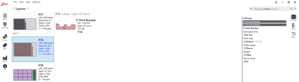

布局视图
选择排样选项将显示当前所选套料中当前所有排样的列表，您可以在其中双击排样以查看其明细，或右键单击排样以查看其他选项。
 双击排样后，您将首先看到零件使用情况以及有关排样的详细信息，如使用的材料、循环时间和其他指标。
双击排样后，您将首先看到零件使用情况以及有关排样的详细信息，如使用的材料、循环时间和其他指标。

您可以单击以滚动浏览可用的不同排样，也可以单击某个零件以使用零件区域中提到的相同交互。右键单击排样将显示一些其他选项。
 •\t发送到机床将向机床放行用于生产的排样，此时排样选项将更改为从机床召回。
•\t添加零件将允许向排样添加其他零件。
•\t调整/紧凑将允许您批量更换排样中使用的材料或机床。
•\t更改LTT将允许您对排样中的选定材料和厚度应用不同的激光工艺。
•\t拆分布局将允许您将具有多个重复的排样放入新排样中。
•\t重命名将允许您重命名排样。
•\t发送到机床将向机床放行用于生产的排样，此时排样选项将更改为从机床召回。
•\t添加零件将允许向排样添加其他零件。
•\t调整/紧凑将允许您批量更换排样中使用的材料或机床。
•\t更改LTT将允许您对排样中的选定材料和厚度应用不同的激光工艺。
•\t拆分布局将允许您将具有多个重复的排样放入新排样中。
•\t重命名将允许您重命名排样。